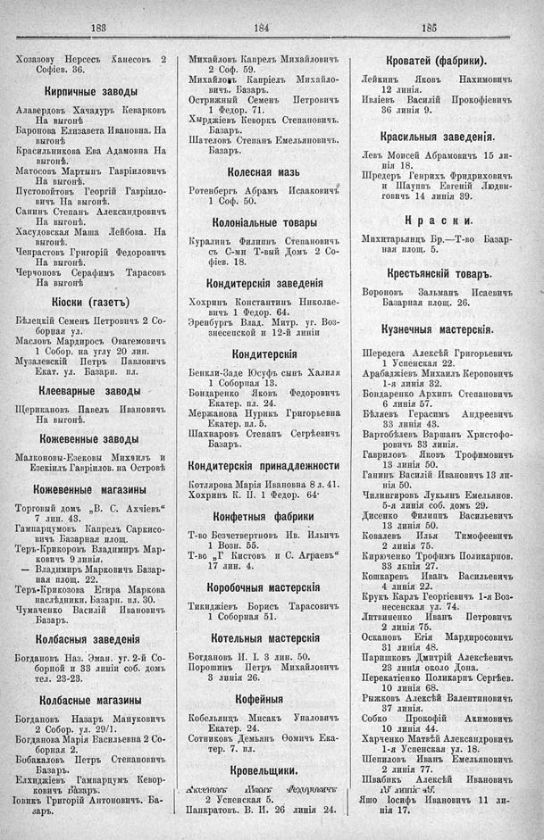

Лист источника 567
Скан

Распознанный текст
183
184
185
Хозазову Нерсесъ Ханесовъ 2
Софіев. 36.
Кирпичные заводы
Алавердовъ Хачадуръ Кеварковъ
На выгонѣ
Баронова Елизавета Ивановна. На
выгонѣ
Красильникова Ева Адамовна На
выгонѣ.
Матосовъ Мартынъ Гавріиловичъ
На выгонѣ.
Пустовойтовъ Георгій Гавріило-
вичъ На выгонѣ.
Санинъ Степанъ Александровичъ
На выгонѣ.
Хасудовская Маша Лейбова. На
выгонѣ.
Чепрастовъ Григорій Федоровичъ
На выгонѣ.
Черчоповъ Серафимъ Тарасовъ
На выгонѣ
Кіоски (газетъ)
Бѣлецкій Семенъ Петровичъ 2 Со-
борная ул.
Масловъ Мардиросъ Овагемовичъ
1 Собор. на углу 20 лин.
Музалевскій Петръ Павловичъ
Екат. ул. Базарн. пл.
Клееварные заводы
Щерикановъ Павелъ Ивановичъ
На выгонѣ.
Кожевенные заводы
Малконовы-Езековы Михаилъ и
Езекіилъ Гавріилов. на Островѣ
Кожевенные магазины
Торговый домъ „В. С. Ахчіевъ“
7 лин. 43.
Гампарцумовъ Капрелъ Саркисо-
вичъ Базарная площ.
Теръ-Крикоровъ Владимиръ Мар-
ковичъ 9 линія.
— Владимиръ Марковичъ Базар-
ная площ. 22.
Теръ-Крикозова Егира Маркова
наслѣдники. Базарн. пл. 30.
Чумаченко Василій Ивановичъ
Базаръ.
Колбасныя заведенія
Богдановъ Наз. Эман. уг. 2-й Со-
борной и 33 линіи соб. домъ
тел. 23-23.
Колбасные магазины
Богдановъ Назаръ Мануковичъ
2 Собор. ул. 29/1.
Богданова Марія Васильевна 2 Со-
борная 2.
Бобакаловъ Петръ Степановичъ
Базаръ.
Елхиджіевъ Гампарцумъ Кевор-
ковичъ Базаръ.
Іовикъ Григорій Антоновичъ. Ба-
заръ.
Михайловъ Капрель Михайловичъ
2 Соф. 59.
Михайловъ Капріелъ Михайло-
вичъ. Базаръ.
Острижный Семенъ Петровичъ
1 Федор. 71.
Хырджіевъ Кеворкъ Степановичъ.
Базаръ.
Шателовъ Степанъ Емельяновичъ.
Базаръ.
Колесная мазь
Ротенбергъ Абрамъ Исааковичъ
1 Соф. 50.
Колоніальные товары
Куралинъ Филиппъ Степановичъ
съ С-ми Т-вый Домъ 2 Со-
фіев. 18.
Кондитерскія заведенія
Хохринъ Константинъ Николае-
вичъ 1 Федор. 64.
Эренбургъ Влад. Митр. уг. Воз-
знесепской и 12-й линіи
Кондитерскія
Бенкли-Заде Юсуфъ сынъ Халиля
1 Соборная 13.
Бондаренко Яковъ Федоровичъ
Екатер. пл. 24.
Мержанова Нурикъ Григорьевна
Екатер. пл. 5.
Шахнаровъ Степанъ Сегрѣевичъ
Базаръ.
Кондитерскія принадлежности
Котлярова Марія Ивановна 8 л. 41.
Хохринъ К. П. 1 Федор. 64.
Конфетныя фабрики
Т-во Безчетвертновъ Ив. Ильичъ
1 Возн. 55.
Т-во „Г Кистовъ и С. Аграевъ“
17 лин. 4.
Коробочныя мастерскія
Тикиджіевъ Борисъ Тарасовичъ
1 Соборная 51.
Котельныя мастерскія
Богдановъ И. І. 3 лин. 50.
Порошинъ Петръ Михайловичъ
3 линія 26.
Кофейныя
Кобельянцъ Мисакъ Уналовичъ
Екатер. 24.
Сотниковъ Демьянъ Ѳомичъ Ека-
тер. 7. пл.
Кровельщики.
Аксеновъ Иванъ Федоровичъ
2 Успенская 5.
Панкратовъ. В. И. 26 линія 24.
Кроватей (фабрики).
Лейкинъ Яковъ Нахимовичъ
12 линія.
Ивліевъ Василій Прокофіевичъ
36 линія 9.
Красильныя заведенія.
Левъ Моисей Абрамовичъ 15 ли-
нія 18.
Шредеръ Генрихъ Фридриховичъ
и Шауппъ Евгеній Людви-
говичъ 14 линія 39.
Краски.
Михитарьянцъ Бр.—Т-во Базар-
ная площ. 5.
Крестьянскій товаръ.
Вороновъ Зальманъ Исаевичъ
Базарная площ. 26.
Кузнечныя мастерскія.
Шередега Алексѣй Григорьевичъ
1 Успенская 22.
Арабаджіевъ Михаилъ Кероповичъ
1-я линія 32.
Бондаренко Архипъ Степановичъ
6 линія 57.
Бѣляевъ Герасимъ Андреевичъ
33 линія 43.
Вартобѣлевъ Варшанъ Христофо-
ровичъ 33 линія.
Гавриловъ Яковъ Трофимовичъ
13 линія 50.
Ганинъ Василій Ивановичъ 13 ли-
нія 50.
Чилингировъ Лукьянъ Емельянов.
5-я линія соб. домъ 29.
Дисенко Филиппъ Васильевичъ
13 линія 50.
Ковалевъ Илья Тимофеевичъ
2 линія 75.
Кирюченко Трофимъ Поликарпов.
33 лѣнія 27.
Кошкаревъ Иванъ Васильевичъ
4 линія 22.
Крукъ Карлъ Георгіевичъ 1-я Воз-
несенская ул. 74.
Литвиненко Иванъ Петровичъ
2 линія 75.
Оскановъ Егія Мардиросовичъ
31 линія 48.
Паришковъ Дмитрій Алексѣевичъ
23 линія около Дона.
Перекатіенко Поликарпъ Сергѣев.
10 линія 68.
Рыжковъ Алексѣй Валентиновичъ
37 линія.
Собко Прокофій Акимовичъ
10 линія 44.
Харченко Матвѣй Александровичъ
1-я Успенская ул. 18.
Шепиловъ Иванъ Емельяновичъ
2 линія 77.
Швабикъ Алексѣй Ивановичъ
15 линія 45.
Яшо Іосифъ Ивановичъ 11 ли-
нія 17.